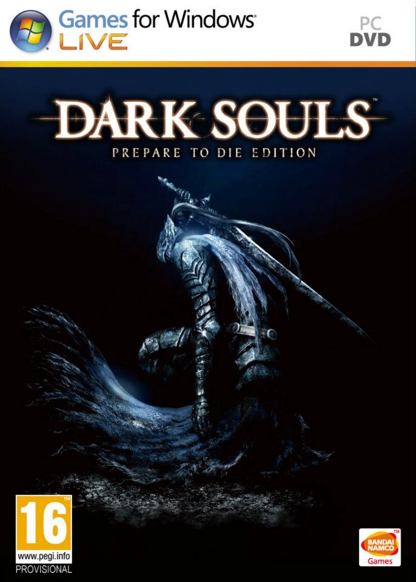

GoodMedia
Your source for acclaimed media--updated each and every day!
Description: Dark Souls is a 2011 action role-playing game developed by FromSoftware and published by Namco Bandai Games. A spiritual successor to FromSoftware's Demon's Souls, the game is the second instalment in the Souls series. Dark Souls takes place in the fictional kingdom of Lordran, where players assume the role of a cursed undead character who begins a pilgrimage to discover the fate of their kind. The port for Microsoft Windows and other computer operating systems was released in August 2012, which featured additional content not seen in the original PlayStation 3 and Xbox 360 versions. In October 2012, the new content was made downloadable for consoles under the subtitle Artorias of the Abyss.
Average Score (across aggregators): 89/100